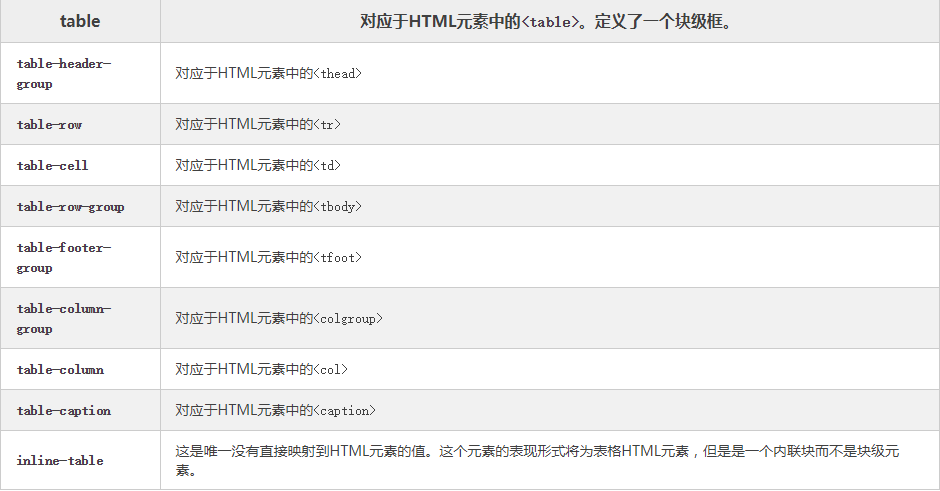
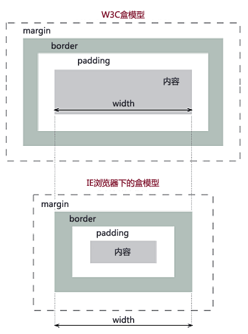
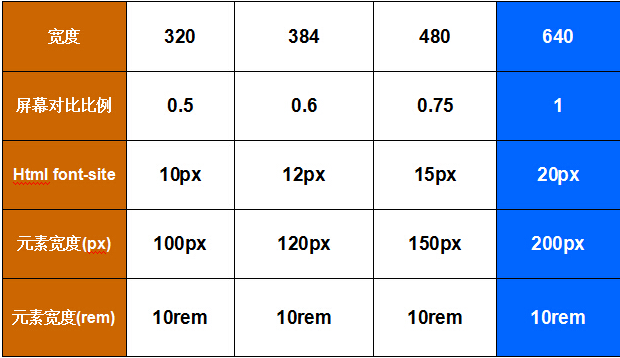

这是位于正常位置的标题
这个标题相对于其正常位置向左移动
这个标题相对于其正常位置向右移动
这是对决定位的标题
这是固定定位的标题
说明：设置元素为块状元素，如果不指定宽高，默认会继承父元素的宽度，并且独占一行，即使宽度有剩余也会独占一行，高度一般以子元素撑开的高度为准，当然也可以自己设置宽度和高度。 html、body和div的高度都设置100%可以将div的高度撑满整个屏幕
说明：CSS 1 提出的属性，它主要用来设置行内元素属性，设置了该属性之后设置高度、宽度都无效，同时text-align属性设置也无效，但是设置了line-height会让inline元素居中
说明： inline-block，默认生成一个块级别框，但是该块级框的行为就像一个内联元素
元素被渲染为列表项呈现的方式，确切说就像是一个块级元素，但是会生成一个可以被list-style属性进行样式修饰的标记框。只有 li元素可以具有list-style的默认值。通常将 li元素重置为默认行为
事实上，你将一个元素的display属性设置为run-in,就会渲染一个run-in框。用例就是使用本地方法创建一个run-in标题，这在平面设计中的说法是和正文位于同一行的标题
说明： 
1.是否是继承属性：display不是继承属性，而visibility是继承属性，后代元素的visibility属性若存在则不会继承，若不存在则继承父元素visibility的值，意味着：父元素的visibility为hidden但是子元素的visibility为visible则子元素依旧可见，子元素visibility不存在则子元素不可见。而元素的display属性设为none其后整棵子树都不可见。
2.是否占据空间：使用display:none，在文档渲染时，该元素如同不存在（但依然存在文档对象模型树中）；而使用visibility:hidden，其占的空间会被空白占位。即一个（display:none）不会在渲染树中出现，一个（visibility:hidden）会。
3.页面相关属性改值后是否重新渲染：visibility :hidden不渲染；display:none渲染。
参考：
参考地址
盒模型分为W3C标准盒模型和IE盒模型
W3C标准和模型：content area 、 padding area 、 bodrer area 和 margin area，其中，width为content area的值
IE盒模型：区别在于 width 包含了border area 、padding area 和 content area。

说明：其实IE的盒模型问题只会出现在IE5.5及其更早的版本中，但事实上不仅IE5.5，连IE6的使用率也很少了，这里对他们进行讨论只是为了更深刻的理解盒模型。
灯泡(unicode几何图形)
伪类、伪元素具体用法： 参考地址权值比较
内联样式： 1000用vertical-align: middle的方式，子元素必须是inline或inline-block类的display属性
display: flex属性使元素居中
标题
单行文本居中
多行文本居中，高度固定，用padding替换height和width
多行文本
多行文本
多行文本
多行文本居中，高度不固定，使用display: table-cell属性
多行文本
多行文本
多行文本
多行文本居中，高度不固定，使用line-height和vertical-align: middle使垂直
多行文本
多行文本
多行文本
transform: CSS3 元素的2D、3D变换
包括 transform-origin: 定义变化起始位置
transform-style: 3D空间中如何嵌套
定义元素属性的渐变
transition-property: 规定设置过渡效果的 CSS 属性的名称。
transition-duration: 规定完成过渡效果需要多少秒或毫秒。
transition-timing-function: 规定速度效果的速度曲线。
transition-delay: 定义过渡效果何时开始。
属性简写：transition: width 2s ease 0s
定义动画属性
em和rem都是相对单位，em相对父元素的字体大小，rem是相对于根元素（html）的字体大小，可以根据设备宽度，统一定义不同的根元素字体大小。可以在某些方面替代工作量大的自适应。
首先基于一个屏幕宽度，定义好相应的html的font-size大小，然后根据屏幕的宽度比例，来更改相应的rem=xxxpx相应比例
